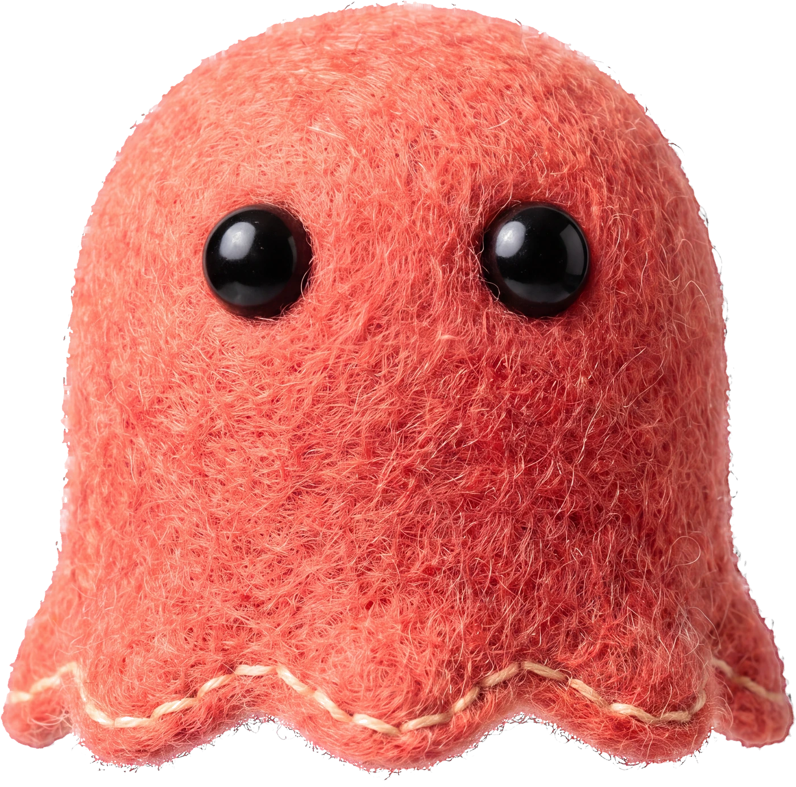
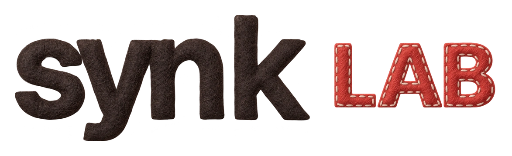
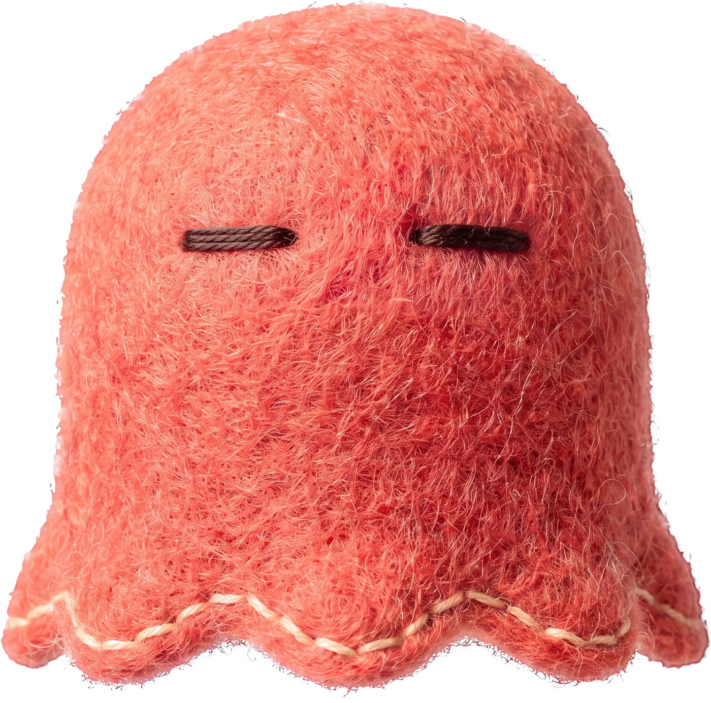

SYNK LAB06 / 06
아 맞다!
Send this to the friend
who always forgets.
Save it for the next time you do.

@synkkorean
Forgot something?
Koreans say…


@synkkoreanWHEN TO SAY IT
아 맞다,
우산!
Oh right —
my umbrella!
HOW IT SOUNDS
a · mat · tta
The ㅈ at the end turns into a short stop, and 다 gets a tense “tt”. Say it fast, like a little gasp.

USE IT TODAY
YOUR TURN
아 맞다,
!
Write yours in the comments — in Korean if you can.
아 맞다!
Save it for the next time you do.
Forgot something?